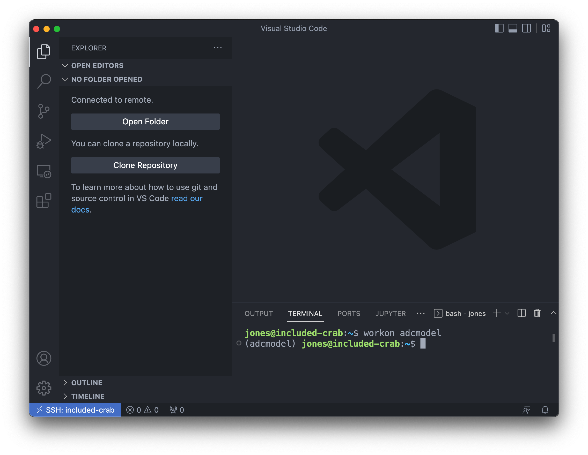
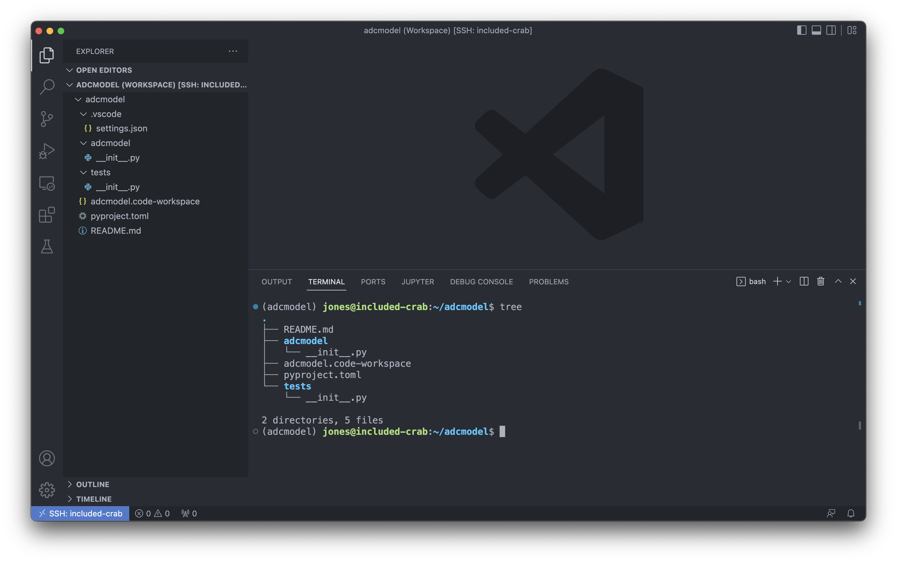
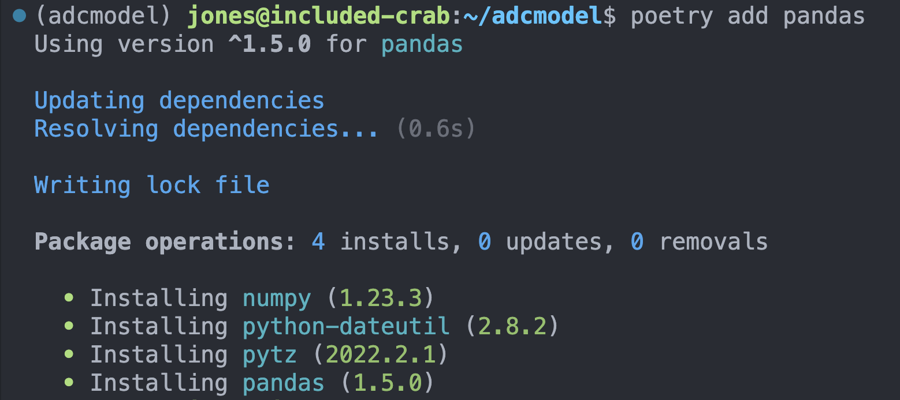
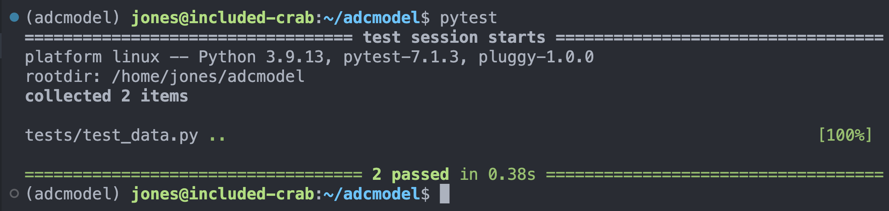

import numpy as np
np.pi*np.power(3, 2)28.274333882308138poetryThe Python Package Index currently houses over 400,000 software projects that you can install, reuse, and extend to accelerate your work. If you’ve worked in python for long at all, you have certainly used the import statement to to load modules that you need in your code.
import numpy as np
np.pi*np.power(3, 2)28.274333882308138This lesson is a first primer on building your own modules and packages in python, and provides some core tools to get started building your own packages. For a deeper dive, check out the Python Packages book, which is freely available online. First, a few definitions:
module is a file containing commands that create functions, variables, and other definitions that can be reused in other code that you write.
package represents a way to bundle python modules, documentation, and related resources as reusable and sharable code, both for your own use and to collaborate with others.
Building reusable code though modules and packages is key to the scietific reporducibility theme that weaves through this course. Creating your own modules and bundling them into packages will help you (and future you) in so many ways:
Modules in python are loaded from the definitions stored in files of the same name with a .py file extension. Within each file are definitions of objects which can be access when the module is imported. For example, imagine you have a file named hello.py in your current directory that contains a function called helloworld with the following contents:
def helloworld():
"""
Print a hello message
"""
print("Hello world!")With that in place, you can then import and use that function in other code you write:
import helloworld
print(helloworld())Packages help organize thes modules into a directory structure so that they can be predictably named and utilized. Packages can contain subpackages to keep modules organized into logical groups. Packages also provide structured metadata so that we can document the package and its dependencies so that it can be reliably installed and correctly used. The structure of a package is a simple directory tree containing the packages modules and subpackages. Two common structures are supported. First, with modules in the root directory:
adcmodel
├── README.md
├── adcmodel
│ ├── __init__.py
│ ├── affine.py
│ ├── data.py
│ └── reports
│ ├── __init__.py
│ └── pdf.py
└── testsAlternatively, the module code is often put in it’s own src directory, like:
adcmodel
├── README.md
├── src
│ └── adcmodel
│ ├── __init__.py
│ ├── affine.py
│ ├── data.py
│ └── reports
│ ├── __init__.py
│ └── pdf.py
└── testsThe presence of the file __init__.py in each module directory indicates that that directory is a module. We won’t get into the details of this special file, but it is often used to load code to initialize a package.
poetryWhile this structure and organization can be created manually, tools like Python Poetry provide a simple way to create and manage packages and their dependencies. Poetry is but one of many tools for managing packages in the python ecosystem, but we think it is useful and straightforward to use, and it tames some of the complexity of the python packaging ecosystem.
In the rest of this tutorial we will:
To get started, we’re using virtualenvwrapper to manage virtual environments in the course, so let’s be sure it is installed in your environment. We’re starting from the scalable-computing-examples workspace, so you should be in the scomp virtual environment in your terminal. So, make sure virtualenvwrapper is installed, and install it if it is not in scomp, using:
$ pip install virtualenvwrapperThe example package we will create is called adcmodel, and we will create a virtual environment of the same name to manage its dependencies. We’ll also install poetry into that adcmodel virtual environment.
$ cd ~
$ mkvirtualenv -p python3.9 adcmodel
$ pip install poetryOnce that is done, we’re going to return our current workspace to the scomp virtual environment (so that future lessons continue to work), and create a new workspace for our project work. To reset the venv, run the following from your terminal:
$ workon scomp
$ cd ~/scalable-computing-examplesNow we have a virtual environment. Next we’ll use it to create our new package.
Now that we havea virtual environment set up, let’s create a new VS Code window, connect to `included-crab, and get our workspace set up.
Command-Shift-P and then select “Connect to Host…” and choose included-crab.nceas.ucsb.eduadcmodel venv using:workon adcmodel
Finally, choose the Python version to use with Command-Shift-P, then choose Python: Select Interpreter, and choose the python version that lists your adcmodel virtual environment.
When that is complete, your VS Code window should look like:

Now we will create a skeleton for our package with poetry new, and take a look at what it produces:
(adcmodel) jones@included-crab:~$ poetry new adcmodel
Created package adcmodel in adcmodel
(adcmodel) jones@included-crab:~$ cd adcmodel/
(adcmodel) jones@included-crab:~/adcmodel$ tree
.
├── README.md
├── adcmodel
│ └── __init__.py
├── pyproject.toml
└── tests
└── __init__.py
2 directories, 4 filesYou’ll see it created a README, an adcmodel directory for our source code (with the accompanying ++init__.py to indicate this is a module), a metadata file defining our project metadata and dependencies, and a tests directory that we’ll come back to later when we explore testing.
To make it easy to open up the project in VS Code, it is helpful to setup a workspace file, and configure VS Code to automatically activiate our adcmodel virtual environment. First, let’s set up the workspace by opening the project folder and saving a workspace file:
adcmodel folder and display it in the VS Code file exporerworkon adcmodel if it hasn’t already been done.vscode using mkdir .vscode.vscode/settings.json with the following content{
"python.terminal.activateEnvInCurrentTerminal": true,
"python.defaultInterpreterPath": "~/.virtualenvs/adcmodel/bin/python"
}Ctrl-R shortcut, open the recent adcmodel workspace on included-crab. If this all goes well, your session should be set to open up this adcmodel virtualenv each time that you open the workspace, and you should be able to see the contents of the skeleton package that you created.Let’s do some coding!

adcmodel example packageSo, imagine this adcmodel package is intended to hold the code for one of our research projects in which we need to load data from a variety of sources, handle quality analysis and data cleaning, and then integrate, analyze and visualize those data. While there are many useful and general functions you might want to build into a package such as this, we’re going to keep it simple and show how to build a single function that consistenly loads and caches CSV-formatted data from the Arctic Data Center based on the identifier of the data object.
For this, we’ll create a module called adcmodel.data that contains our data handling functions, one of which will be a load_adc_csv() function that takes an Arctic Data Center Identifier as input.
To create this functionality, we’ll make use of existing data loading functions and data retrieval functions from the pandas package, and operating system utilities from the os package. Almost all packages and functions you write will make use of the existing ecosystem of python packages, and we need to keep track of those dependencies in our package.
Luckily, Poetry provides simple command line utilities for adding, removing, and installing dependent packages into your virtual environment. For each package that you need, use poetry add to register that package in your dependencies list and install it in your adcmodel virtual environment. We’ll do this for pandas, but don’t need to register urllib or os because these base packages ship with python.

pyproject.toml configuration file
Dependency metadata that is added to the project and other information about the project is found in the pyproject.toml configuration file that is managed by poetry. In this file you’ll find key metadata about the project like it’s name and description and authors, as well as the list of specific dependencies that the package needs installed to work correctly. You should open this file and edit the key metadata, but poetry add and poetry remove are probably better for adding and removing dependencies.
[tool.poetry]
name = "adcmodel"
version = "0.1.0"
description = "Arctic Data Center example package for scalable computing course"
authors = ["Matt Jones <gitcode@magisa.org>"]
readme = "README.md"
[tool.poetry.dependencies]
python = "^3.9"
pandas = "^1.5.0"
[build-system]
requires = ["poetry-core"]
build-backend = "poetry.core.masonry.api"Let’s write some module code! In this case, we want to implement the adcmodel.data.load_adc_csv(identifier) function that we’ll use for data loading and caching. We do this by creating a new file called data.py in the adcmodel directory, and then implementing the function. Create a new python file called data.py and save it to the adcmodel module directory, with the following function implementation:
import pandas as pd
import urllib
import hashlib
import os
def load_adc_csv(identifier=None):
"""
Load and cache a CSV data file from the Arctic Data Center as a pandas.DataFrame
"""
hashval = hashlib.sha256(bytes(identifier, 'utf-8')).hexdigest()
path = "data/" + hashval
if not os.path.exists("data/"):
os.mkdir("data/")
if not os.path.exists(path):
service = "https://arcticdata.io/metacat/d1/mn/v2/object/"
url = service + identifier
msg = urllib.request.urlretrieve(url, path)
df = pd.read_csv(path)
return dfOnce you save the file, we can use poetry install to install the package and try running the function in an interactive session. Check it out by opening a new Jupyter notebook and running the following in the first cell (after you install the needed jupyter packages):
from adcmodel.data import load_adc_csv
df = load_adc_csv("urn:uuid:e248467d-e1f9-4a32-9e38-a9b4fb17cefb")
df.head()üéâ Congratulations, you‚Äôve created your first package! üéâ
Utilities like python linters and code formatters can make coding faster, more consistent, and more reliable. Poetry supports the use of development packages that are available in the virtual environment during the development cycle but are nto required for runtime use of the package. Like regular dependencies, development packages can be added with poetry add, but we also pass in a qualifier to add it to --group dev, which marks as only for use during development.
poetry add --group dev pytest blackYou can now use black to format your code (via Command-Shift-P Format Document) and `pytest to run tests. Next, let’s get into testing.
A major advantage of writing packages is that you can thoroughly test each of the functions that you write, thereby ensuring that they operate correctly both with good data and bad data. While it’s always helpful to confirm that a function returns the correct value within the bounds that it is normally meant to operate, it is also important to pass it data that it wouldn’t normally see. For example, does your linear model produce the correct results when it is passed a normal dataset? How about if it is passed a dataset with only one observation, or with all the same value, or with 0 or negative numbers? Does it produce an understandable error if some of the values are character values when they should be numeric? Does it continue operating in the face of bad data? Should it, or shoud it produce an exception? These and others are the questions you need to ask when testing your packages.
Python provides a number of robust testing frameworks, but we will work with pytest, one of the common ones used for unit testing. The poetry new command already set up our package to be ready for testing, so now all we need to do is to add some test files in the tests directory.
In pytest and other frameworks, the common pattern is to use the python assert function to determine whether a value produced from your code matches expectations. For example, given a function that produces a product of two numbers, we could assert that product(5, 6) == 30 and that product(-3, -9) == 9.
Generally, it is good practice to produce at least one test file for each of your package source files, and their names are prefixed with test_. So, for our data.py source file, we might expect to build tests in a file called test_data.py. Let’s create that file in the tests directory and walk through populating it with some simple tests. The functions in the test file are also named with test_ as the prefix on the function name, and generally each test function atomically tests one aspect of the code. That way, when a test function fails, it should be quickly clear what type of an error would produce that kind of error.
To get started, create tests/test_data.py and populate it with our first test function:
from adcmodel.data import load_adc_csv
def test_load_adc_csv():
df = load_adc_csv("urn:uuid:e248467d-e1f9-4a32-9e38-a9b4fb17cefb")
assert df is not NoneYou can run the tests after saving the file by running pytest on the commandline, which will produce output indicating which tests passed and failed.
We can add other tests that test multiple conditions, and we can use any of the features of python to creatively test that our code will produce correct results. Here’s another test to check that the data file we loaded has the right number of rows and columns:
def test_load_adc_csv_shape():
df = load_adc_csv("urn:uuid:e248467d-e1f9-4a32-9e38-a9b4fb17cefb")
assert df is not None
assert (df.shape[0] == 17856) & (df.shape[1] == 6)
Finally, what happens when tests are run that fail? Try adding the following test, and determine if the failure is due to the code, the test, or the data? What would you change to make this test reliably pass, or fail more gracefully?
def test_load_adc_csv_inputs():
df = load_adc_csv()
assert df is not NoneThe answer to this and other more detailed questions on testing are covered in the excellent overview of testing provided by the “Chapter 5: Testing” of “Python Packages”.
Python packages are an excellent mechanism to organize your modules for reuse both within your local code projects and with your colleagues and the broader science community. Adopting a structured approach to organizing, documenting, and testing your code can ultimately save you a lot of time and also increase the quality of your work. Scientific software is also a first-class product of the research enterprise, and is critical for fully understanding the lineage of derived data and research results. The emerging consensus is that publishing open source software packages to GitHub or other source code control systems, and then archiving them in repositories like Software Heritage, the Arctic Data Center, Zenodo, or the Python Package Index increases the robustness, transparency, and reproducibility of research results. And it also provides a robust starting point for research teams to build upon and amplify each other’s work. Using tools like Poetry and pytest to organize and build packages makes the process quick and efficient.